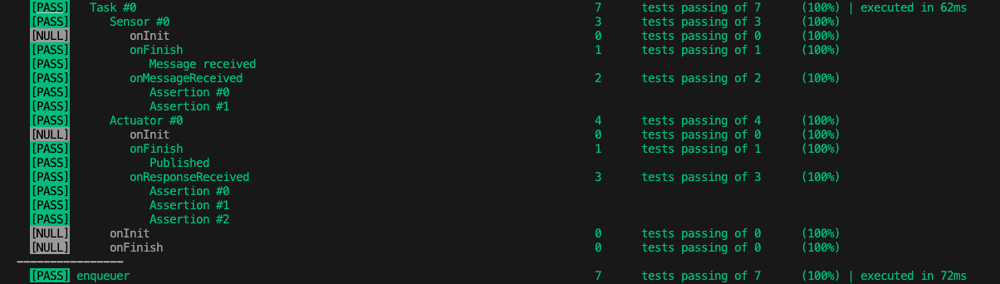

Polyglot flow testing tool
Make sure your set of services is working properly by mocking its inputs and asserting against its outputs
Enqueuer is a platform that provides the following capabilities:
- Support for multi protocols
- Chainable message flows
- Friendly for developers and non developers
- Easily extensible through third party plugins, including yours
- Automated end-to-end testing
- Place tests front and center
examples/http.yml

$ nqr examples/http.yml
